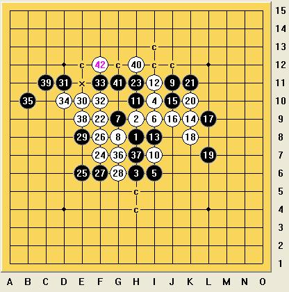
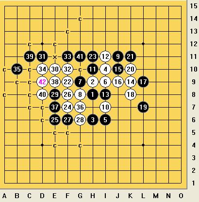
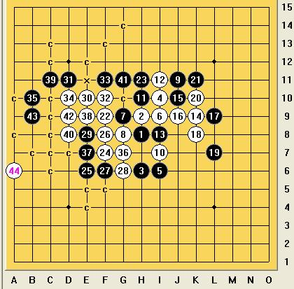

[互动棋谱]瑞星骗11盖帽地毯补完！（补全了部分变化）
#1 [互动棋谱]瑞星骗11盖帽地毯补完！（补全了部分变化）作者：wd1988 发表时间：2009-3-15 8:07:14
首先要感谢游戏人间耐心的检查，让我发现了错漏。我本来认为论坛的大师完全可以自己杀出来我提示的点的，没想到竟然非得要完全地毯不可。。。那个42确实失误了，因为我竟然打了两个点。。。游戏人间发的第二个变化是一个“精彩的VCT”，说明我的点没错，只不过没打完而已。当初下出这个点，和我拆棋的小刀的徒弟一眼就看出来这个点没防了，我就觉得他能看出来其他人也能看出来，没想到还有人把这一路当成需要费心去冥思苦想的VCT,说实话这一路VCT比我原来没想出来的要那个简单多了，不是一个数量级的。。。既然如此那我只好打完了，省的被人说是毛巾谱。右路的的那些没用的反我真不想打了，因为大家都承认无反。左侧杀法是一模一样啊一模一样。


以下这个44的走法，直截了当地堵住了黑棋的任何防守企图，黑棋无防了。不是抓就是四三

 瑞星骗招盖11真地毯必败（补全部分路线）.rar
瑞星骗招盖11真地毯必败（补全部分路线）.rar［ 有志青年 于 2009-3-15 8:30:30 时奖励此帖[金币加 20 威望加1］
［本站用户 木木夕 于 2009-3-15 11:52:46 花5个金币送您鲜花一朵］
［本站用户 二十七刀 于 2009-3-15 12:36:42 花5个金币送您鲜花一朵］
［本站用户 gerbo 于 2009-3-16 2:38:35 花5个金币送您鲜花一朵］
［此帖子已被 茗弈小刀 在 2009-4-22 19:15:01 编辑过］
#2 Re:瑞星骗11盖帽地毯补完！（补全了部分变化）作者：笨亭亭 发表时间：2009-3-15 11:02:48
厉害，顶下，嘻嘻#3 Re:瑞星骗11盖帽地毯补完！（补全了部分变化）作者：天逸 发表时间：2009-3-15 11:03:45
嘻嘻,偶也顶下~~
#4 Re:瑞星骗11盖帽地毯补完！（补全了部分变化）作者：炫飞惜花雨 发表时间：2009-3-15 11:19:42
 厉害，顶
厉害，顶#5 Re:瑞星骗11盖帽地毯补完！（补全了部分变化）作者：炫飞惜花雨 发表时间：2009-3-15 11:23:20
厉害，我顶！#6 Re:瑞星骗11盖帽地毯补完！（补全了部分变化）作者：木木夕 发表时间：2009-3-15 11:40:04
谢谢楼主分享，您认真负责的态度值得大家学习。#7 Re:瑞星骗11盖帽地毯补完！（补全了部分变化）作者：香雪美景 发表时间：2009-3-15 14:25:43
厉害,向你学习了.#8 Re:瑞星骗11盖帽地毯补完！（补全了部分变化）作者：雨点 发表时间：2009-3-17 13:45:18
 我来过了
我来过了
#9 Re:瑞星骗11盖帽地毯补完！（补全了部分变化）作者：侯军学棋 发表时间：2009-3-17 14:21:51
这个才是白必胜谱
#10 Re:瑞星骗11盖帽地毯补完！（补全了部分变化）作者：闲倚栏杆 发表时间：2009-4-7 14:22:18
楼主很厉害哦#11 Re:瑞星骗11盖帽地毯补完！（补全了部分变化）作者：裁决殿雪月 发表时间：2009-4-7 23:00:16
看到地毯就兴奋……#12 Re:瑞星骗11盖帽地毯补完！（补全了部分变化）作者：Solmyr 发表时间：2009-4-8 8:42:44
 这个44的边线诡异杀~可以发到大鱼的中盘妙手那帖子里了~
这个44的边线诡异杀~可以发到大鱼的中盘妙手那帖子里了~#13 Re:瑞星骗11盖帽地毯补完！（补全了部分变化）作者：茗弈梓轩 发表时间：2009-4-10 11:05:30
学习过了，顶一下！